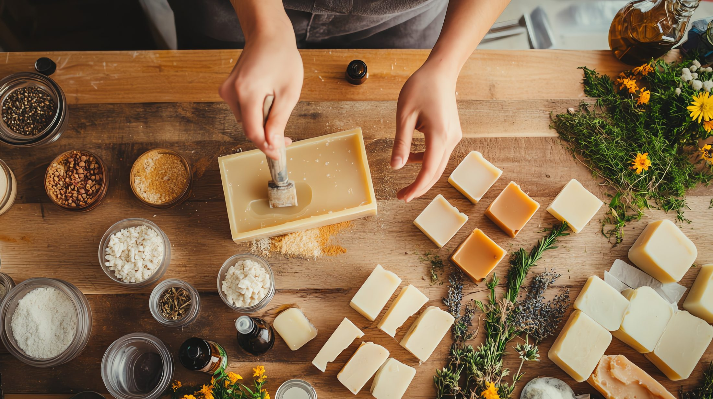
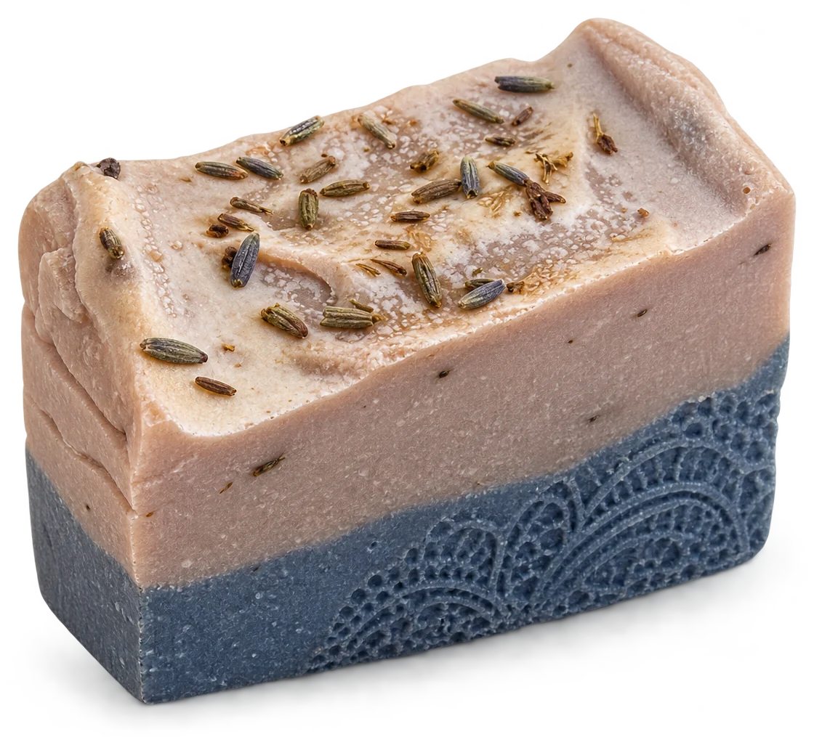
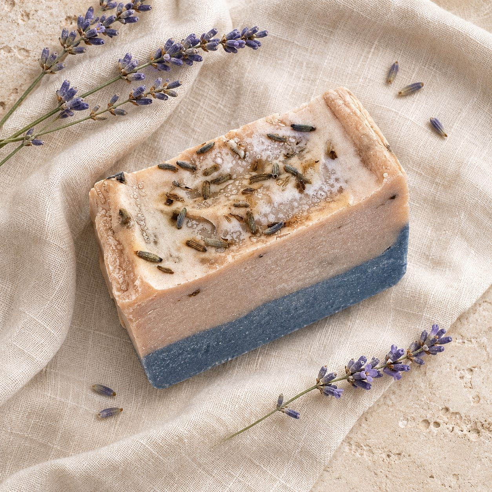
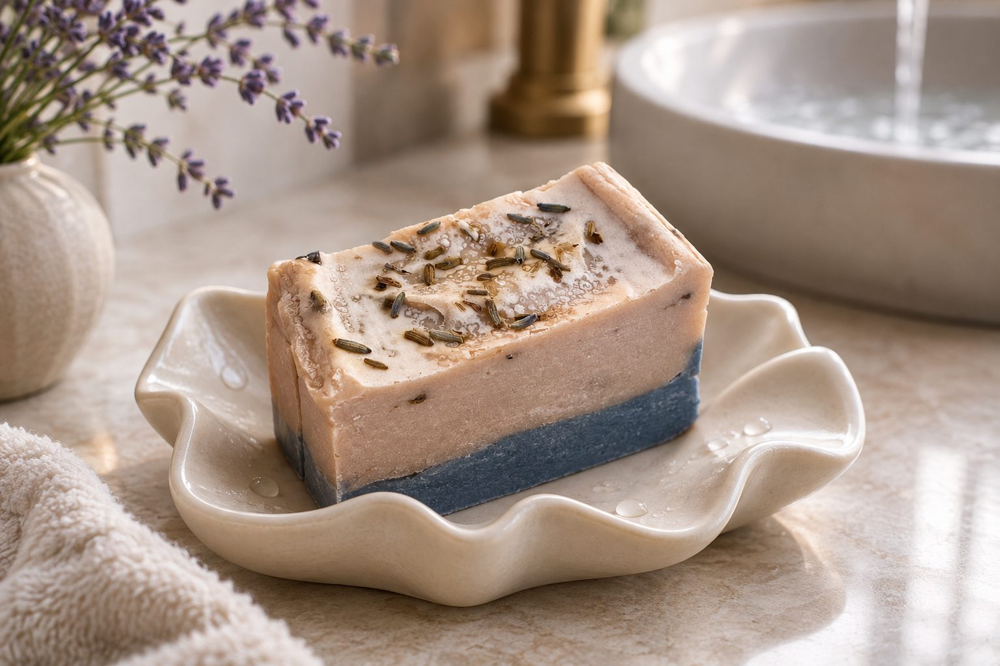
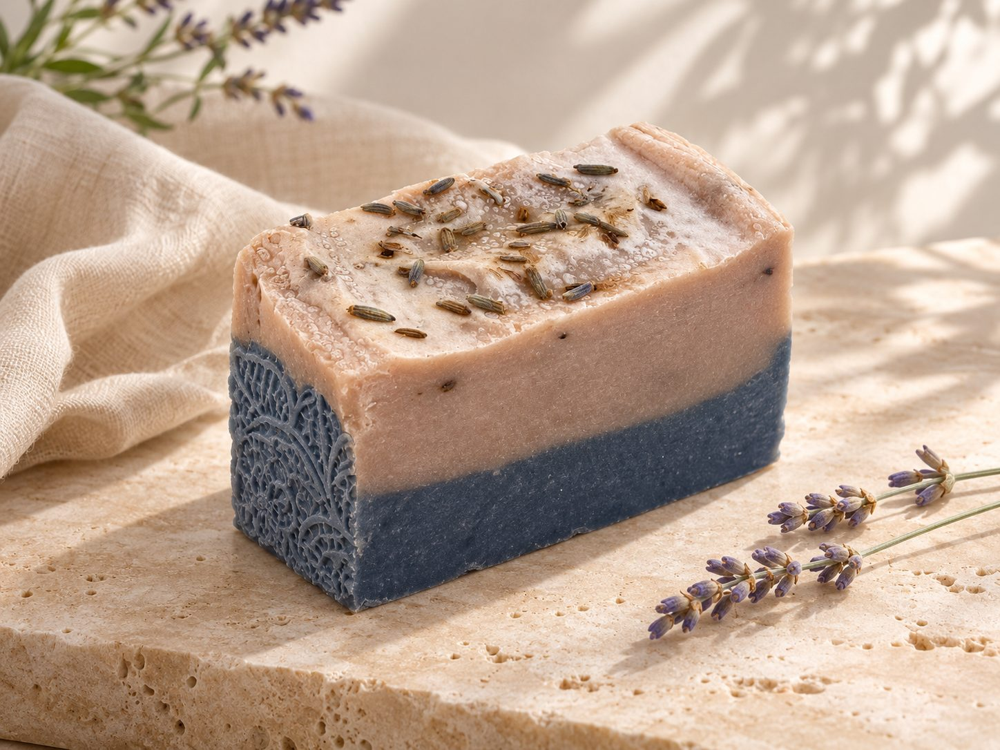
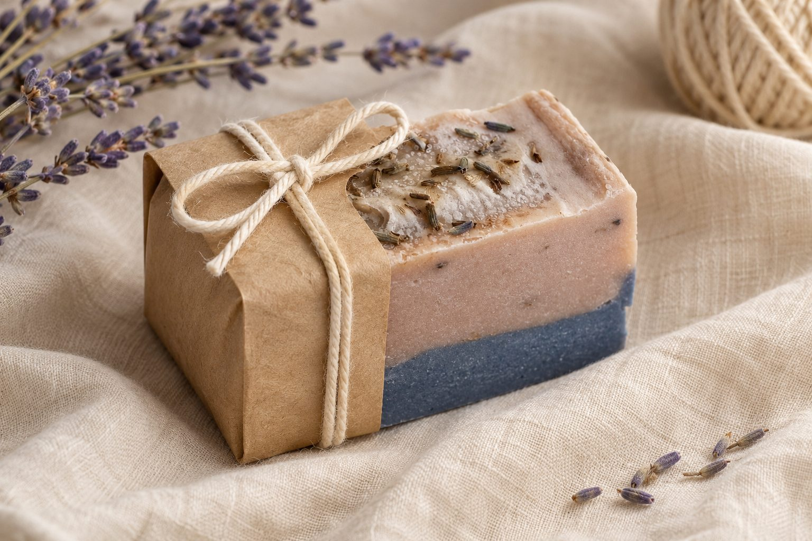
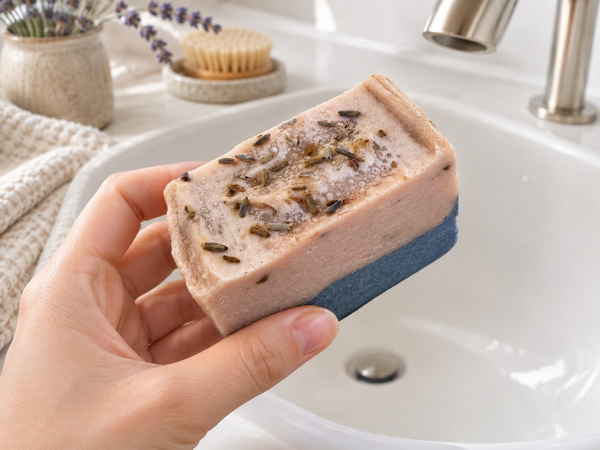
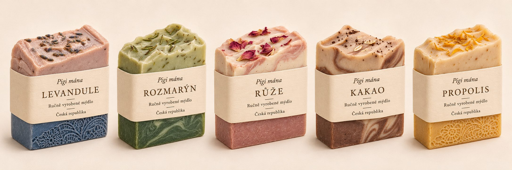

Mýdla za studena
Pět přírodních mýdel z jedné malé dílny. Ručně vyrobeno v České republice.
Dvouvrstvé večerní mýdlo. Horní vrstva s květy levandule, spodní tmavá vrstva s jemným otiskem krajky. Levandule a špetka cedrového dřeva zpomalí den a připraví vás na spánek.
Olivový olej, kokosový olej, bambucké máslo, ricinový olej, mandlový olej, destilovaná voda, hydroxid sodný, indigo, sušené květy levandule, směs esenciálních olejů (levandule, cedrové dřevo).





Svěží bylinné mýdlo ve dvou odstínech zelené. Horní světlejší vrstva se snítkami rozmarýnu, spodní tmavší s jemným mramorováním. Rozmarýn probouzí a šetrně čistí smíšenou pokožku. Jako zahrada po dešti.
Olivový olej, kokosový olej, slunečnicový olej, kakaové máslo, konopný olej, rozmarýnový odvar, hydroxid sodný, francouzský zelený jíl, spirulina, sušený rozmarýn, směs esenciálních olejů (rozmarýn, šalvěj, eukalyptus).
Krémová vrstva s jemným mramorováním z růžového jílu, spodní vrstva sytější, nahoře sušené okvětní lístky růže. Jemné, květinové a trochu slavnostní. Hedvábí dodává pěně sametový pocit. Mýdlo pro chvíle, kdy si chcete udělat radost.
Olivový olej, slunečnicový olej, kokosový olej, bambucké máslo, bio jojobový olej, růžová voda, hydroxid sodný, makadamiový olej, hedvábí, růžový jíl, žlutý oxid, zlatá mika, sušené okvětní lístky růže, směs esenciálních olejů (geránium, růžový absolut).
Mramorované mýdlo s kakaem a ovsem. Jemný peeling z mletých ovesných vloček a kakaové máslo, které na pokožce zanechá tenký ochranný film. Voní hřejivě a sladce, jako horká čokoláda.
Olivový olej, kokosový olej, kakaové máslo, bambucké máslo, ricinový olej, ovesný nálev, hydroxid sodný, kakaový prášek, jemně mleté ovesné vločky, celé ovesné vločky na povrch, kakaový absolut.
Rituál
Namočit, nadechnout se, opláchnout. Pár minut denně, které obyčejné ráno promění v malý obřad.
Zjistit více
Propolisové mýdlo s krajkovým reliéfem a sušenými květy měsíčku. Propolis zklidňuje a podporuje regeneraci, měsíček hladí. Bez esenciálních olejů, jen jemná pryskyřičná vůně propolisu. Pro citlivou a podrážděnou pokožku.
Olivový olej macerovaný měsíčkem, kokosový olej, bambucké máslo, mandlový olej, ricinový olej, destilovaná voda, hydroxid sodný, propolisová tinktura, med, sušené květy měsíčku.
Levandule, Rozmarýn, Růže, Kakao a Propolis v jedné krabičce. Každé mýdlo s vlastní papírovou etiketou, zabalené do hnědého papíru a převázané provázkem. Dárek, který voní dřív, než ho rozbalíte.
Viz jednotlivá mýdla. Všechna jsou vyrobená za studena z rostlinných olejů, bez přidaného glycerinu a syntetických vůní.

Jak mýdla vznikají
Všechna mýdla Pigi mána vznikají metodou za studena, nejstarším a nejšetrnějším způsobem výroby. Rostlinné oleje a másla se nezahřívají na vysoké teploty, a tak si zachovají vše, kvůli čemu jsme je vybrali: olivový olej pro jemnost, kokosový pro pěnu, bambucké máslo pro výživu.
Oleje se spojí s louhem a začne zmýdelnění. Louh beze zbytku zreaguje, v hotovém mýdle už není. Hmota tuhne v dřevěné formě 24 až 48 hodin, pak se ručně krájí a označí etiketou. Poté mýdla nejméně čtyři týdny zrají: odpaří se voda, kousek ztvrdne, zjemní a pěna zhoustne.
Jediným zdrojem vůně jsou esenciální oleje, barvu dávají jíly, indigo a byliny. Žádný přidaný glycerin, syntetické vůně, konzervanty ani umělá barviva. Trpělivost je tajná ingredience.
Prohlédnout mýdla